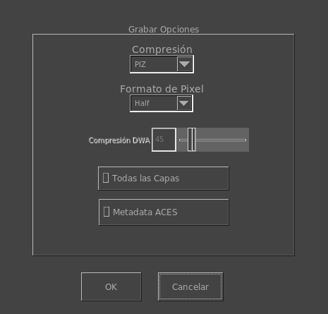

Las opciones de OpenEXR al Grabar Archivos

Las opciones al grabar OpenEXR te permite seleccionar como mrViewer graba tus imágen(es) de OpenEXR. La ventana aparece cuando grabas un archivo con la extensión .exr.
Esta ventana te permite seleccionar, por ejemplo, el algoritmo de compresión. Los algoritmos de compression sin pérdida de calidad son: None, RLE, ZIP, ZIP Scanline, PIZ Wavelet. Los algoritmos que pierden calidad son B44, B44A DWAA and DWAB.
Para los algoritmos DWAA/DWAB, es posible seleccionar la calidad/radio de compresión. Eso es lo que hace esa opción debajo de los algoritmos de compresión.
Tambien podés seleccionar la calidad de grabación del pixel (un entero sin signo, la mitad de una coma flotante o una coma flotante completa). Es decir, UINT, Half y Float. Para la mayoría de los casos Half será suficiente.
OpenEXR soparta multiples capas y seleccionar grabar todas las capas te permitirá grabar todas las capas de la imagen en vista. mrViewer graba un archivo multiparte de OpenEXR v2.0 para mayor velocidad.
Finalmente, podés elegir la Metadata de ACESclip (todas las transformaciones de CTL) en un archivo similarmente nombrado a tu archivo OpenEXR. Este archivo será leído automaticamente una vez que cargues el archivo OpenEXR o su secuencia.